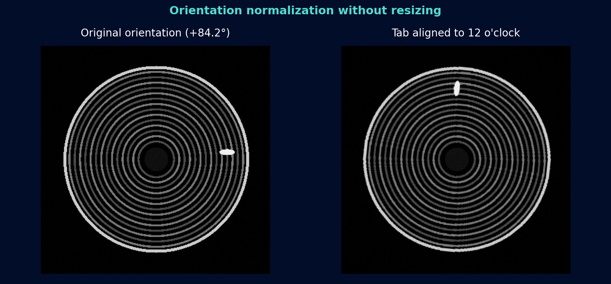
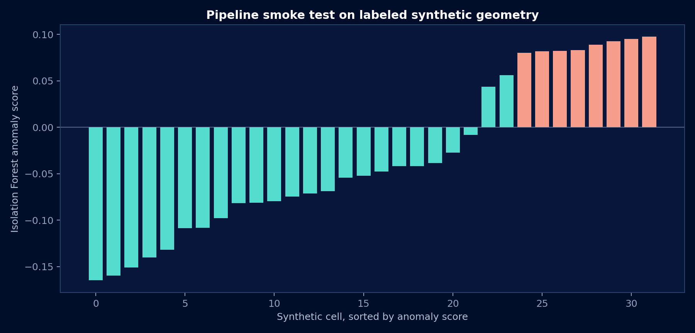
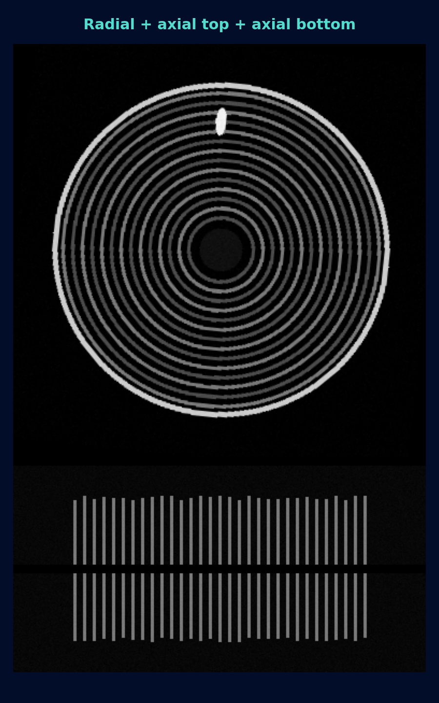
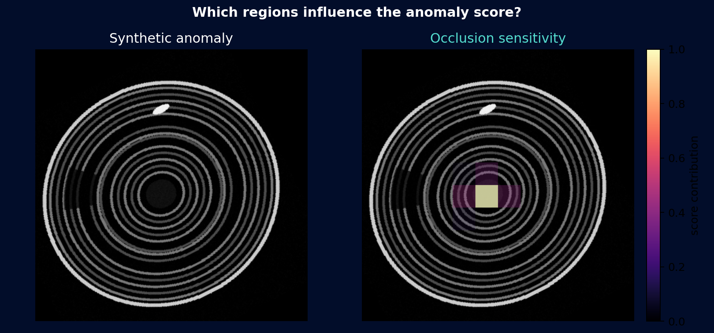

Locate the can and tab
Estimate the outer can, isolate a bright annular region, and identify the collector tab while excluding the can wall.
Computer Vision · Anomaly Detection · Explainability
A geometry-preserving pipeline that aligns cylindrical-cell CT scans, combines radial and axial evidence, ranks unusual structures, and shows which image regions influenced each score.
Built as a reproducible research prototype. Public results use deterministic synthetic CT-like images because the manufacturing dataset is not distributable.

Orientation normalization rotates the scan but never resizes it.
Pipeline
Subtle differences in can circularity, layer spacing, eccentricity, and electrode overhang can span only a few pixels. The pipeline uses rotation, cropping, and padding—but never scaling—to preserve that geometry.
Estimate the outer can, isolate a bright annular region, and identify the collector tab while excluding the can wall.
Rotate each radial scan so the tab is at 12 o'clock, keeping the original pixel dimensions.
Stack the aligned radial image with native-width top and bottom axial crops using padding where needed.
Measure center offset, symmetry error, edge density, ring count, spacing variation, intensity spread, and alignment error.
Fit Isolation Forest on reference-cell descriptors and return an anomaly score for each new scan.
Occlude one patch at a time to visualize which regions raise or lower the score.
Reproducible Results
The demo generates 24 reference cells and eight cells with injected eccentricity, layer-spacing changes, missing arcs, and axial overhang variation. The chart separates the injected anomalies without using them to fit the detector.


No hidden benchmark: every public number on this page can be regenerated with python run_demo.py.
Explainability
Occlusion sensitivity measures how the anomaly score changes when a patch is replaced with the image median. Bright regions have greater positive influence on the score and give reviewers a concrete starting point for inspection.
